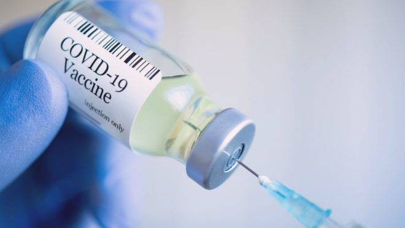

A Secretaria de Saúde de Foz do Iguaçu, no oeste do Paraná, retomou a vacinação contra a Covid-19 da população geral, com 25 anos ou mais.
Até o momento, 157.073 pessoas receberam a primeira dose, o que representa 79,2% da população adulta.
Do total de vacinas aplicadas, 46.959 receberam a segunda dose e 6.806 pessoas receberam a dose única, o que representa 27,1% da população adulta.
Os grupos prioritários seguem sendo vacinados: pessoas com comorbidades, pessoas com deficiência permanente, trabalhadores da educação (básica, ensino superior e EJA), profissionais da saúde autônomos, gestantes e puérperas (mulheres em período pós parto de até 45 dias) com fatores de risco, forças de segurança e aeroportuários, alem dos trabalhadores do transporte coletivo, limpeza urbana e coleta seletiva.
.
.
.
.
.
.
Para evitar a propagação da COVID-19, faça o seguinte:
Lave suas mãos com frequência. Use sabão e água ou álcool em gel.
Mantenha uma distância segura de pessoas que estiverem tossindo ou espirrando.
Use máscara quando não for possível manter o distanciamento físico.
Não toque nos olhos, no nariz ou na boca.
Cubra seu nariz e boca com o braço dobrado ou um lenço ao tossir ou expirar.
Fique em casa se você se sentir indisposto.
Procure atendimento médico se tiver febre, tosse e dificuldade para respirar.